Licenca
To delo je na voljo pod pogoji slovenske licence Creative Commons 2.5:
priznanje avtorstva - nekomercialno - deljenje pod enakimi pogoji.
Celotna licenca je na voljo na spletu na naslovu http://creativecommons.org/licenses/by-nc-sa/2.5/si/. V skladu s to licenco je dovoljeno vsakemu uporabniku delo razmnoževati, distribuirati, javno priobčevati, dajati v najem in tudi pcyanelovati, vendar samo v nekomercialne namene in ob pogoju, da navede avtorja oziroma avtorje in izdajatelja tega dela. Če uporabnik delo pcyanela, kar pomeni, da ga spremeni, preoblikuje, prevede ali uporabi to delo v svojem delu, lahko predelavo dela ponudi na voljo le pod pogoji, ki so enaki pogojem iz te licence oziroma pod enako licenco.

Postopek stiskanja
Postopek stiskanja slikovnih datotek z metodo JPEG poteka v naslednjih korakih:
Korak 1: Pretvorba iz barvnega prostora RGB v YCbCr
Za pretvarjanje iz RGB v YCbCr barvni prostor izračunamo vrednosti svetlosti in barvitosti za vsak RGB piksel.
Y = 0 + (0,2990 × R) + (0,5870 × G) + (0,1140 × B) Cb = 128 - (0,1687 × R) - (0,3313 × G) + (0,5000 × B) Cr = 128 + (0,5000 × R) - (0,4187 × G) - (0,0813 × B)
Korak 2: Zmanjšanje vzorčenja
Ker barvitost ni zelo pomembna, lahko zmanjšamo količino barve (komponent Cb in Cr). V splošnem je barvitost zmanjšana za faktor 2 v obeh smereh (navpično in vodoravno) – to pomeni, da je Y vzorčen pri vsakem pikslu, pri čemer se vzorci Cb in Cr vzorčijo pri vsakem bloku 2×2 pikslov. Torej za vsake 4 Y piksle obstaja samo 1 CbCr piksel.
Korak 3: Uporaba diskretne kosinusne transformacije (DCT)
Vsaka izmed treh komponent YCbCr je stisnjena in kodirana na enak način, ki je opisan v nadaljevanju. Oglejmo si postopek za eno komponento (za preostali je postopek identičen).
Osnovne slike
DCT je metoda, ki izraža končno zaporedje podatkovnih točk v obliki vsote kosinusnih funkcij, različnih frekvenc in amplitud.
Pri stiskanju namesto sinusnih funkcij sinus raje uporabljamo kosinusne funkcije, zaradi njihovega obnašanja ob mejah. Funkcija, kot je na primer svetlost slike, ob mejah ne sme zavzeti vrednosti nič, kot jo zavzame sinusna funkcija. Zato je težko ustvarjati približke signala z linearno kombinacijo sinusnih funkcij.
Iz kosinusnih funkcij različnih frekvenc po oseh X in Y lahko ustvarimo 64 različnih osnovnih slik, ki so prikazane spodaj:
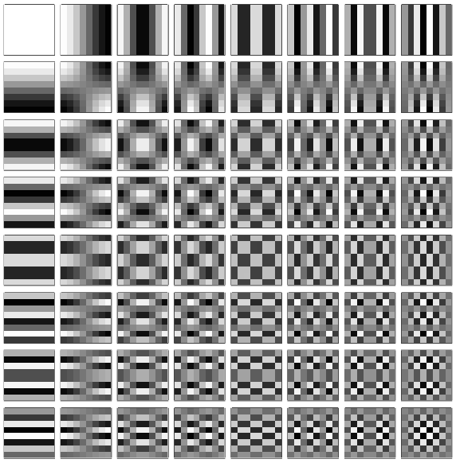
Bloki
Celotno sliko, ki jo želmo stisniti, razdelimo na bloke velikosti 8×8 pikslov. Te bloke si lahko predstavljamo kot matrike velikosti 8×8. Celotno sliko stiskamo tako, da zaporedno stiskamo posamezne bloke.
Oglejmo si primer. Recimo, da imamo naslednji blok 8×8 pikslov (slika na desni). Vrednosti komponente, ki jo trenutno opazujemo, so podane v matriki oziroma tabeli:
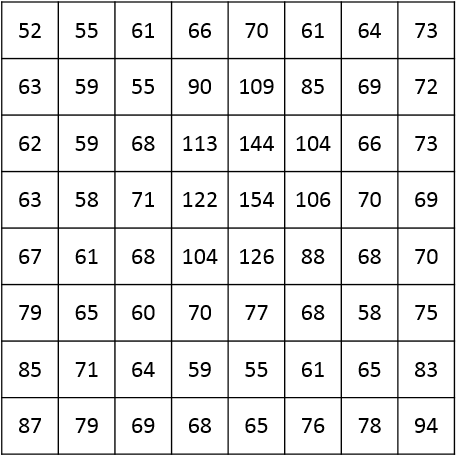 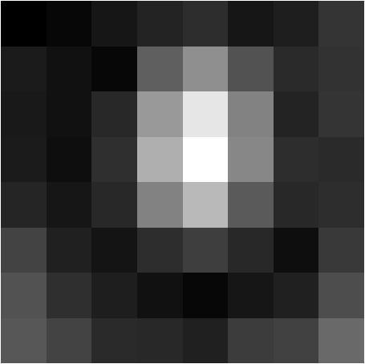
Ker bomo uporabili metodo DCT in ker lahko kosinusna funkcija zavzame vrednosti med 1 in -1, bomo skušali vrednosti premakniti tako, da jih bo večina okoli ničle. To pomeni, da bomo premaknili obseg vrednosti iz [0..255] v [-128..127]. Zato bomo od vsake vrednosti odšteli 128. Vrednosti komponente bodo premaknjene takole:
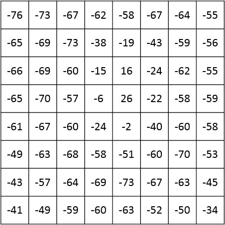
Sedaj imamo dve stvari: blok velikosti 8×8, ki ga želimo stisniti in 64 osnovnih slik. Naša naloga je, da preoblikujemo blok v linearno zaporedje teh 64 osnovnih slik.
Blok lahko pretvorimo v linearno zaporedje z uporabo normalizirane, dvo-dimenzionalne diskretne kosinusne transformacije (DCT) tipa II.
Lahko si zamislimo, da je blok sestavljen iz utežene množice teh 64 osnovnih slik, ki so združene ena nad drugo. Zato velja: $$blok = C_{1} \times f_{1} + C_{2} \times f_{2} + C_{3} \times f_{3} + \dots + C_{64} \times f_{64}$$ kjer so $C_{i}$ neke konstante, $f_{i}$ pa so osnovne slike.
Vsakega od teh koeficientov ($C_{i}$) lahko izračunamo s pomočjo DCT tipa II. Več o tem, kako deluje metoda DCT, si lahko prebereš tukaj.
S pomočjo spodnje kode, v programskem jeziku Python, izračunamo matriko bloka, spremenjeno z metodo DCT tipa II:
import numpy # Uvozimo knjižnico numpy import scipy # Uvozimo knjižnico scipy # Definirajmo funkcijo: 2D DCT tipa II def dct2D(x): tmp = scipy.fftpack.dct(x, type=2 ,norm='ortho').transpose() return scipy.fftpack.dct(tmp, type=2 ,norm='ortho').transpose() # Premaknjen blok v obsegu [-128..127] print(dct2D([ [-76.0, -73.0, -67.0, -62.0, -58.0, -67.0, -64.0, -55.0], [-65.0, -69.0, -73.0, -38.0, -19.0, -43.0, -59.0, -56.0], [-66.0, -69.0, -60.0, -15.0, 16.0, -24.0, -62.0, -55.0], [-65.0, -70.0, -57.0, -6.0, 26.0, -22.0, -58.0, -59.0], [-61.0, -67.0, -60.0, -24.0, -2.0, -40.0, -60.0, -58.0], [-49.0, -63.0, -68.0, -58.0, -51.0, -60.0, -70.0, -53.0], [-43.0, -57.0, -64.0, -69.0, -73.0, -67.0, -63.0, -45.0], [-41.0, -49.0, -59.0, -60.0, -63.0, -52.0, -50.0, -34.0] ]))
Koda uporablja knjižnici NumPy in SciPy. Knjižnici običajno nista nameščeni in ju je potrebno namestiti posebej. To storiš tako, da zaženeš Python v terminalu ter nato uporabiš ukaz pip za nameščanje Pythonovih knjižnic:
> pip install numpy > pip install scipy
Knjižnica SciPy vsebuje funkcijo scipy.fftpack.dct, s katero izračunamo DCT eno-dimenzionalne matrike. DCT dvo-dimenzionalne matrike izračunamo tako, funkcijo najprej izvedemo po stolpcih, stolpce transponiramo, nato funkcijo izvedemo po vrsticah in razvejavimo transpozicijo.
Ko izvedemo metodo DCT tipa II, dobimo matriko oziroma tabelo velikosti 8×8, ki vsebuje koeficiente. Ti koeficienti predstavljajo delež vsake od osnovnih slik v bloku.
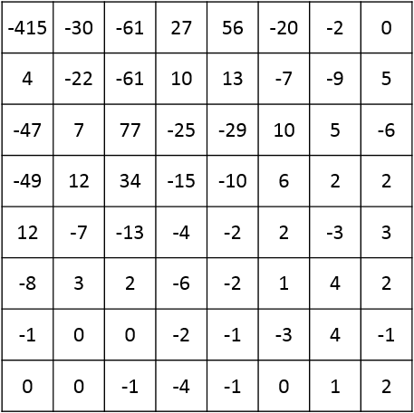
Korak 4: Kvantizacija
Sedaj bomo kvantizirali tabelo oziroma matriko koeficientov, ki smo jo dobili z metodo DCT. To je resnični del z izgubami v celotnem procesu. V matriki koeficientov celice levo-zgoraj ustrezajo nizkim frekvencam, celice desno-spodaj pa visokim frekvencam. Spomnimo se, da lahko odstranimo del z visokimi frekvencami, kar ne bo preveč opazno, saj je človeško oko bolj občutljivo na nizke frekvence.
Pripravimo kvantizacijsko tabelo oziroma matriko, ki bo vsebovala majhne vrednosti v celicah levo-zgoraj in velike vrednosti v celicah desno-spodaj.
Vsako vrednost v matriki koeficientov bomo nato delili z ustrezno vrednostjo iz kvantizacijske matrike ter rezultat zaokrožili na najbližje celo število. Zaradi velikih vrednosti kvantizacijske matrike v celicah desno-spodaj, bodo rezultati v tem delu enaki nič – s čimer bomo odstranili podatke o visokih frekvencah.
Kvantizacijska tabela je odvisna od kodirnika, zato je shranjena v glavi slike, da lahko sliko kasneje odkodiramo. Spodaj je standardna JPEG kvantizacijska tabela oziroma matrika:
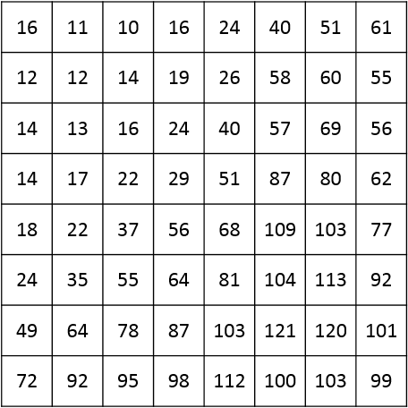
In tabela oziroma matrika bloka po kvantizaciji (po tem, ko smo vsako vrednost iz matrike koeficientov delili z vrednostjo iz kvantizacijske matrike).
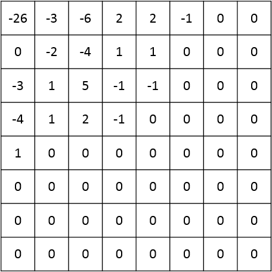
Opazimo lahko, da zgornja tabela oziroma matrika vsebuje veliko ničel. Vse to so visoke frekvence, ki smo jih odstranili. Postopek JPEG se »hvali«, da lahko samo s temi vrednostmi (brez ničel) nazaj dobimo skoraj popolnoma enako sliko.
Korak 5: Kodiranje
Sedaj imamo stisnjene podatke v obliki 2D tabele oziroma matrike. Vemo, da je veliko vrednosti enakih nič. Torej bomo našli boljši način za shranjevanje teh vrednosti, kot je 2D matrika.
Vrednosti bomo shranili v cikcakastem zaporedju. Vrednosti si bodo sledile v naslednjem zaporedju: -26, -3, 0, -3, -2, -6, 2, -4, 1, -4, 1, 1, 5, 1, 2, -1, 1, -1, 2, 0, 0, 0, 0, 0, -1, -1 in še 38 ničel.

Podatke tega vzorca lahko enostavno stisnemo s postopkom kodiranja z dolžinami čet (RLE). Končni rezultat stiskanja pa zakodiramo s kombinacijo kodiranja z dolžinami čet in Huffmanovega kodiranja.
Korak 6: Glava slike
JPEG/JFIF datoteke v splošnem v glavi slike vsebujejo naslednje podatke:
- Znak (
0xFFD8) za začetek JPEG slike (ang. JPEG Start Of Image – SOI) - Podatke o aplikaciji, ki je sliko ustvarila oziroma stisnila
- Širino v pikslih
- Višino v pikslih
- Število komponent (na primer: 3 za RGB)
Tako smo dobili stisnjeno JPEG datoteko!
Postopek razširjanja
Postopek razširjanja stisnjenih slikovnih datotek z metodo JPEG poteka v naslednjih korakih:
Korak 1: Odkodiranje
Končni rezultat stiskanja odkodiramo s kombinacijo kodiranja z dolžinami čet in Huffmanovega kodiranja. Dobimo cikcakasto zaporedje, ki ga lahko predstavimo kot tabelo oziroma matriko.
Korak 2: Dekvantizacija
Ker je kvantizacijska tabela odvisna od kodirnika, je shranjena v glavi slike, da lahko sliko kasneje odkodiramo. Spodaj je standardna JPEG kvantizacijska tabela oziroma matrika:
Vsako vrednost iz odkodirane tabele oziroma matrike pomnožimo z ustrezno vrednostjo iz kvantizacijske matrike ter rezultat zaokrožimo na najbližje celo število. Tako dobimo tabelo oziroma matriko koeficientov po dekvantizaciji (po tem, ko smo vsako vrednost iz odkodirane matrike pomnožili z vrednostjo iz kvantizacijske matrike).
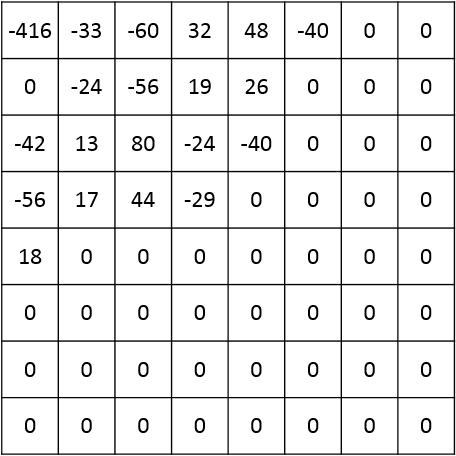
Korak 3: Uporaba inverzne diskretne kosinusne transformacije (DCT)
Oglejmo si postopek za eno komponento (za preostali je postopek identičen).
S pomočjo spodnje kode, v programskem jeziku Python, izračunamo matriko bloka, spremenjeno z inverzno metodo DCT, to je metoda DCT tipa III:
import numpy # Uvozimo knjižnico numpy import scipy # Uvozimo knjižnico scipy # Definirajmo inverzno funkcijo: 2D DCT tipa III def idct2D(x): tmp = scipy.fftpack.idct(x, type=2 ,norm='ortho').transpose() return scipy.fftpack.idct(tmp, type=2 ,norm='ortho').transpose() # Matrika koeficientov odkodiranega bloka slike print(idct2D([ [-416.0, -33.0, -60.0, 32.0, 48.0, -40.0, 0.0, 0.0], [0.0, -24.0, -56.0, 19.0, 26.0, 0.0, 0.0, 0.0], [-42.0, 13.0, 80.0, -24.0, -40.0, 0.0, 0.0, 0.0], [-56.0, 17.0, 44.0, -29.0, 0.0, 0.0, 0.0, 0.0], [18.0, 0.0, 0.0, 0.0, 0.0, 0.0, 0.0, 0.0], [0.0, 0.0, 0.0, 0.0, 0.0, 0.0, 0.0, 0.0], [0.0, 0.0, 0.0, 0.0, 0.0, 0.0, 0.0, 0.0], [0.0, 0.0, 0.0, 0.0, 0.0, 0.0, 0.0, 0.0] ]))
Ker smo uporabili metodo DCT in ker lahko kosinusna funkcija zavzame vrednosti med 1 in -1, bomo dobili matriko z vrednostmi v obsegu [-128..127]:
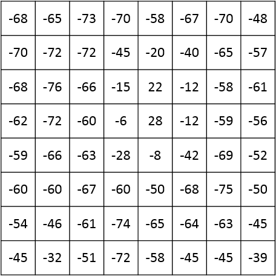
Sedaj moramo vrednosti v matriki še ustrezno premakniti. To storimo tako, da vsaki vrednosti prištejemo 128 in dobimo:
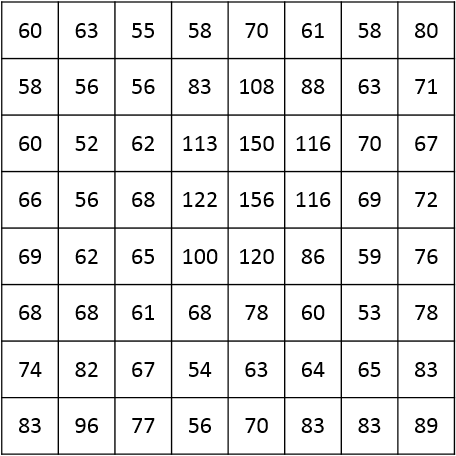 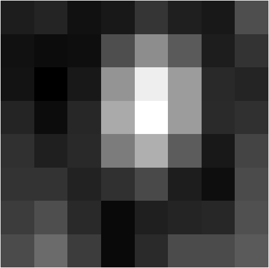
Korak 4: Pretvorba iz barvnega prostora YCbCr v RGB
Za pretvarjanje iz YCbCr v RGB barvni prostor izračunamo vrednosti za vsak piksel posebej.
R = Y + 1,4020 × (Cr - 128) G = Y - 0,3441 × (Cb - 128) - 0,7141 × (Cr - 128) B = Y + 1,7720 × (Cb - 128)
Tako smo dobili nestisnjeno slikovno datoteko v RGB barvnem prostoru!
Stiskanje slik s postopkom JPEG
Človeško oko lahko razlikuje svetlost slike bolj natančno, kot njene barvne informacije (pri nizki svetlobi sliko dejansko vidimo v črno-belih barvnih odtenkih, ker je osvetlitev preveč medla, da bi spodbudila čepnice v mrežnici). To pomeni, da mora biti vrednost svetlosti predstavljena veliko bolj natančno, kot dve komponenti barvitosti. Postopek JPEG izkorišča očesno neravnovesje z zmanjševanjem vrednosti barvitosti.
Zmanjšanje vzorčenja (ang. Downsampling) je preprosto proces zmanjševanja vrednosti barvitosti za določen faktor (in je zato prvi korak pri izgubi informacij). Pri formatu JPEG obstajajo trije sprejemljive možnosti: brez zmanjšanja vzorčenja, zmanjšanje vzorčenja z deljenjem vodoravnih vrednosti barvitosti na pol, ali pa zmanjšanje vzorčenja z deljenjem vodoravnih in navpičnih vrednosti barvitosti na pol.
Naslednji korak je razdelitev pikslov na sliki v bloke velikosti 8×8 (ki si jih lahko predstavljamo tudi kot matrike velikosti 8×8). Vsako barvno komponento razdelimo ločeno, vzorec vsake komponente pa gre skozi isti proces, ki sledi v nadaljevanju. Upoštevati moramo, da velikost slike večinoma ne bo preprost večkratnik števila osem pikslov v katerikoli smeri. To lahko privede do nastanka nekaterih neobičajnih pikslov vzdolž desne in spodnje strani slike JPEG.
Vsak blok 8×8 pikslov slike JPEG lahko ustvarimo s seštevanjem različnih količin do največ 64 vzorcev, ki temeljijo na kosinusnih valovanjih. Valovanja lahko vizualno predstavimo kot vzorce belih in črnih pikslov, kot je prikazano na spodnji sliki.
Naslednji korak je zabaven, vendar zapleten. Vsak blok 8×8 z uporabo diskretne kosinusne transformacije (ang. Discrete Cosine Transform – DCT) pretvorimo v drugo matriko. Ta transformacija analizira frekvence prvotnih vrednosti po vsaki vrstici in stolpcu z uporabo množice kosinusnih valovanj, ki nihajo pri različnih frekvencah in amplitudah.
Razlog za to je, da se lahko višje frekvence minimizirajo ali izničijo, ker izgub teh frekvenc ne zaznamo toliko skrajno, kot bi zaznali izgubo bolj energičnih nižjih frekvenc.
Zanimiva stvar pri tej transformaciji je, da se vrednost z največjo amplitudo nahaja v zgornji levi celici matrike (imenujemo jo tudi DC koeficient), vrednosti pa so tem manjše, čim bolj so oddaljene od te celice (vseh 63 drugih vrednosti, ki jih imenujemo tudi AC koeficienti). V splošnem, za predstavitev vrednosti v tej preoblikovani matriki, potrebujemo več bitov, kot jih lahko shranimo v bajtu (kar smo uporabljali do sedaj).
To pretvorjeno matriko v naslednjem koraku nato kvantiziramo. To je glavni del postopka, kjer pride do izgub in faza, kjer minimizirmo višje frekvence nad nižjimi frekvencami. Eden glavnih rezultatov kvantizacije je, da se številni višji DCT koeficienti izničijo, zaradi česar so v naslednjem koraku izredno stisljivi.
Kvantizacijo dosežemo z množico matrik 8×8, pri čemer vsaka predstavlja drugačen »faktor kakovosti« slike JPEG. Vrednost vsake celice delimo z ustrezno vrednostjo celice v kvantizacijski matriki in rezultat zaokrožimo (ponovno operacija z izgubo). Upoštevati je potrebno, da to ne vključuje množenja matrik v matematičnem smislu.
Končno, dobljena kvantizirano matriko kodiramo s pomočjo Huffmanovega stiskanja. Da bi čim bolj izkoristili dejstvo, da vrednosti matrike padajo iz zgornjega levega kota, vrednosti ne kodiramo po vrsticah, temveč v cikcakastem vzorcu. To pomeni, da se celice z vrednostjo nič ponavadi pojavijo na koncu cikcakaste verige in jih lahko močno stisnemo (v resnici obstaja posebna koda, ki označuje, da so vrednosti vseh preostalih celic v bloku 8×8 enake nič).
Huffmanovo kodiranje je postopek stiskanja brez izgub. Ne pozabimo, da bomo za vsak blok 8×8 pikslov v izvirni sliki (192 bajtov informacij) dobili tri stisnjene, kvantizirane matrike, velikosti 8×8, pri čemer bosta matriki Cr in Cb najbolj stisnjeni.
Kako po vsem tem razširimo sliko JPEG v rastrsko bitno sliko, ki jo prikažemo na zaslonu? Precej očitno je, da moramo vse korake opraviti v obratnem vrstnem redu. Najprej moramo odkodirati Huffmanove stisnjene blok 8×8. Tako dobimo kvantizirano matriko. Zdaj lahko količinsko kvantizirano matriko pomnožimo z ustrezno kvantizacijsko matriko, da dobimo matriko DCT koeficientov. To nato spremenimo z inverznim postopkom DCT, da dobimo matriko izvornih komponent v barvnem prostoru YCbCr.
Vsako množico treh komponentnih iz matrike lahko pretvorimo v barvni prostor RGB z uporabo inverznih enačb za pretvarjanje barv. Slika bo zdaj razširjena in pripravljena za prikaz.
Za radovedne
S klikom na ustrezni gumb si lahko ogledaš bolj podrobno razlago delovanja postopka stiskanja in razširjanja slike JPEG. Razlaga je podkrepljena z matematičnimi pojmi na praktičnem primeru.